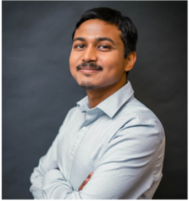

I am an Assistant Professor at the University of Houston, where I have been a faculty member since 2022. My research focuses on reliable and trustworthy computing at the edge, with an emphasis on building resilient and dependable computing systems. I am a recipient of the NSF CAREER Award for my research on Ad-Hoc Cloudless AI. I have also received the Teaching Excellence Award from the University of Houston in recognition of my contributions to teaching and student learning.
Previously, I was a Postdoc (NSF CI-Fellow) at Duke University with Dr. Krishnendu Chakrabarty. I did my PhD at Washington State University, where I was advised by Dr. Partha Pratim Pande and Dr. Janardhan Rao Doppa. You can find my CV here.
My current research focuses on reliable and trustworthy computing at the edge, spanning hardware, systems, and AI. I develop techniques to make resource-constrained and distributed computing systems more resilient to hardware failures, security threats, and unreliable operating environments, with a particular interest in enabling trustworthy AI beyond the cloud. A complete list of my work is on my Google Scholar page. Select a research area below to see related publications.
I am looking for PhD students to join my group at the University of Houston. Applicants should have strong background knowledge of VLSI, computer architecture, or machine learning, and significant coding experience in C/C++/Python/Verilog. Applicants must meet the UH admission requirements.
If you are interested, email me at bjoardar (at) central (dot) uh (dot) edu with your CV, and include your GPA, GRE and TOEFL scores (if available). Evidence of coding experience (e.g., GitHub repositories, online coding contests) is preferred.